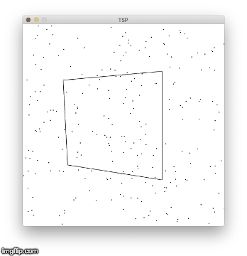
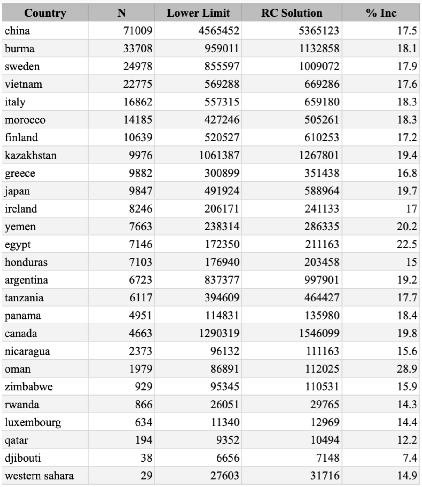
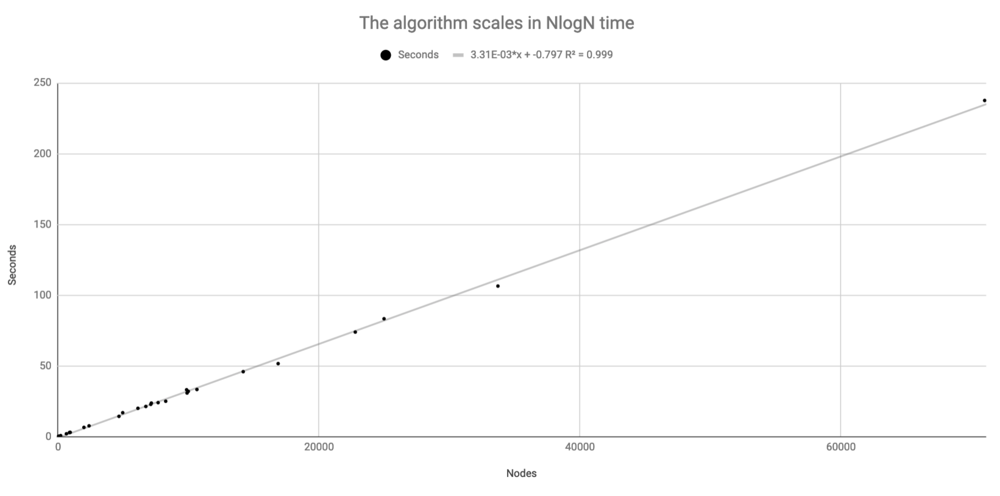

We can use KMeans clustering to divide our points recursively. If K = 4, we start with a square that divides all points into four quadrants. Each vertex can then be divided into four clusters, and we find the shortest path that integrates those four clusters into the existing square. The process repeats until the clusters ultimately converge into the points themselves. The KMeans algorithm is O(N), and it’s repeated an average of logK(N) times.

I ran a few tests on files from the University of Waterloo’s TSP database, and this algorithm offered solutions which were often within 20 percent of the estimated lowest bound.

Though, instead of taking hours or days to complete, each were solved in less than 5 minutes. The time to complete each of these countries are plotted on the following chart:

This algorithm has not been compared to other NlogN algorithms (suggestions welcome); however, it has been compared to the Smallest Insertion (SI) algorithm, which take N² time. Running 1000 tests on random nodes when N=100, recursive clustering is better than SI more than 59 percent of the time, despite SI taking considerably longer.
My testing can be found in this Jupyter notebook.
Here is a link to the code on GitHub, and here are three high-level functions the program offers:
import recursive_clustering as rc # Create 100 random points and draw solution with K = 4 rc.solve_random(N=100, K=4) # Given a numpy array, draw the solution rc.solve_array(all_nodes, K=4) # given a two-column CSV of X and Y, draw the solution rc.solve_file('testFiles/usa115475.csv', K=5, draw=False)
All these functions return a dictionary, the tour length, and the wait time. The dictionary has the following structure:
path_d = { ID0: { 'center': [X, Y], 'connections': [ID#, ID#], 'subnodes': [[x, y]....[x, y]], 'hasBeenSplit': True }, ID1: ... }
This dictionary contains all clusters and their subnodes. If you wanted to access only the final nodes, you’d look only for keys whose subnodes list has a length one or haven’t been split. Or you can go to the last ID and follow the connections in a circle. Suggestions for better implementations are welcome.
The algorithm considers all possible permutations of K when it integrates the new K clusters into the existing shape. With that in mind, a larger K can very quickly become slower than N². For points between 1,000 and 10,000, K = 5 seems to offer the shortest path. K = 5 is also consistently faster than all other K values, probably because it’s 120 permutations are outweighed by a faster convergence.
Developing some kind of statistical model to find the optimal value of K given the number of subnodes might be a straightforward, worthwhile area of research going forward. Currently K is static throughout the whole process; however, my intuition tells me that altering K as a function of its subnodes would decrease tour lengths and runtime.
Additionally, although I haven’t yet run any tests, this algorithm would theoretically run in NlogK(N) time on higher-dimensional TSP as well.
Originally published on Medium on March 9, 2019.
Questions? Mistakes? Feel free to email me. Check out my other projects.